Manual de usuario
Abastecimiento en GESPRO
Para la jefatura de abastecimiento y los compradores: cómo una solicitud aprobada en la obra se convierte en una orden de compra emitida, con tres cotizaciones comparadas y la adjudicación visada.
- Roles en GESPRO
- Jefe de abastecimiento · Comprador
- Sus pantallas
- Liberación · Procesos de compra · Órdenes de compra
- Ejemplos con
- Marcela Soto y Diego Herrera · obra 1201 Edificio Mirador del Lago
1El camino de una compra
Una compra pasa por varias manos. Abastecimiento entra cuando la obra ya aprobó lo que necesita, y sale cuando la orden queda emitida al proveedor. Los pasos destacados son los de este manual.
- SolicitudLa obra pide materiales y su administrador la aprueba.
- LiberarLa jefatura asigna cada línea a un comprador.
- ProcesoEl comprador junta líneas e invita proveedores.
- CotizacionesEl comprador registra lo que ofreció cada uno.
- Cuadro y propuestaGESPRO compara; el comprador propone a quién comprar.
- VisaciónLa jefatura aprueba; sobre el tramo, también gerencia.
- Orden de compraEl comprador la crea y la emite al proveedor.
- RecepciónBodega recibe contra la orden.
| Quién | Qué hace en GESPRO |
|---|---|
| Jefe de abastecimiento | Libera las solicitudes y las asigna, reasigna procesos entre compradores y visa las adjudicaciones. Ve los procesos de todos. |
| Comprador | Arma los procesos con lo que le liberaron, registra cotizaciones, propone la adjudicación y emite las órdenes. Ve primero sus propios procesos. |
| Gerente de construcción | Visa las adjudicaciones que superan el tramo de monto de la empresa. |
2Tu bandeja
Las adjudicaciones que esperan tu visto bueno llegan a la Bandeja de pendientes, igual que cualquier documento que te toque firmar. El número de la campana te avisa cuando hay algo nuevo, por ejemplo una solicitud recién aprobada para liberar.

- La adjudicación pendiente: folio del proceso, monto adjudicado, obra y quién la propuso.
- La cadena de visación: primero tú; si el monto supera el tramo, después el gerente de construcción.
- Aprobar desde la misma lista, si ya conoces el caso.
- Abrir el documento completo para revisar el cuadro comparativo antes de decidir. Es lo recomendable: ver Visar la adjudicación.
3Liberar las solicitudes
Liberar es decir «esto se compra, y lo compra esta persona». Lo hace la jefatura de abastecimiento en Compras › Liberación. Solo aparecen solicitudes ya aprobadas por la obra.
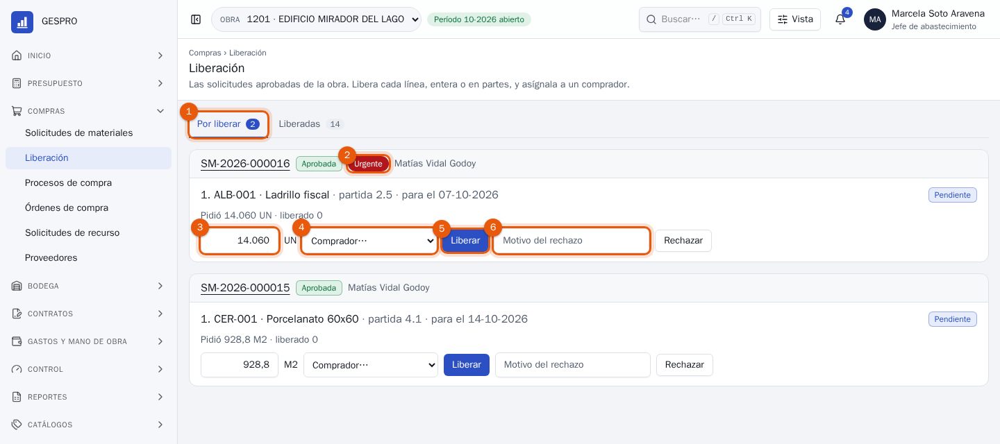
- Por liberar: todo lo aprobado que todavía no tiene comprador. El número dice cuántas solicitudes esperan.
- Urgente va siempre primero. Después, en el orden en que se aprobaron.
- La cantidad a liberar. Viene completa; bájala si hoy se compra solo una parte. El resto queda por liberar.
- El comprador que se hará cargo.
- Liberar. La línea pasa al comprador, que recibe un aviso.
- Rechazar, con motivo, si la línea no se va a comprar, por ejemplo porque hay stock en otra obra. Quien la pidió ve el motivo.
Lo ya liberado pasa a la pestaña Liberadas, de lo más reciente a lo más antiguo.
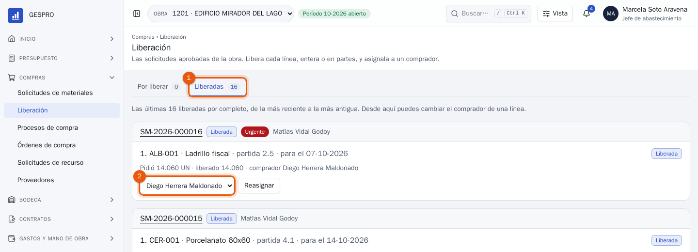
- Liberadas: el historial de lo asignado.
- Cambiar el comprador de una línea y Reasignar, por ejemplo si alguien sale de vacaciones.
Cuando la obra pidió algo que no está en el catálogo, la línea no se puede liberar hasta que catálogos cree el recurso. Liberación lo avisa arriba, con un enlace a las solicitudes de recurso.
4Armar un proceso de compra
Un proceso de compra es una ronda de cotización. Puede juntar líneas de varias solicitudes de la misma obra, para cotizar todo junto a los mismos proveedores. Se arma en Compras › Procesos de compra.
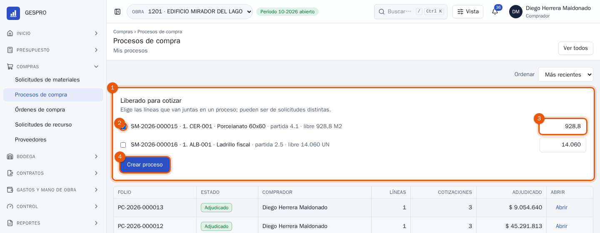
- Liberado para cotizar: lo que te asignaron y aún no está en ningún proceso.
- Marca las líneas que van juntas.
- La cantidad a cotizar. Puedes cotizar una parte ahora y el resto en otro proceso.
- Crear proceso. GESPRO le da un folio, como PC-2026-000015, y lo abre.
Abajo está la lista de procesos. Muestra los tuyos; Ver todos incluye los de los demás compradores.
5Invitar y publicar
El proceso nace en borrador. Primero eliges a quién le vas a pedir precio.
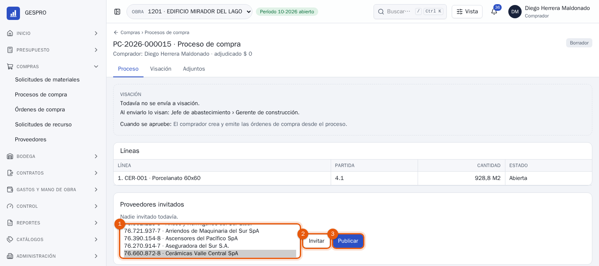
- Los proveedores. Mantén apretada la tecla Ctrl (⌘ en Mac) para elegir varios. Solo aparecen los proveedores activos.
- Invitar. Quedan en la lista de invitados; puedes agregar más después.
- Publicar. Abre la recepción de cotizaciones.
6Registrar las cotizaciones
Cuando un proveedor responde, registras su cotización. Una por proveedor; si te manda una nueva, reemplaza a la anterior.
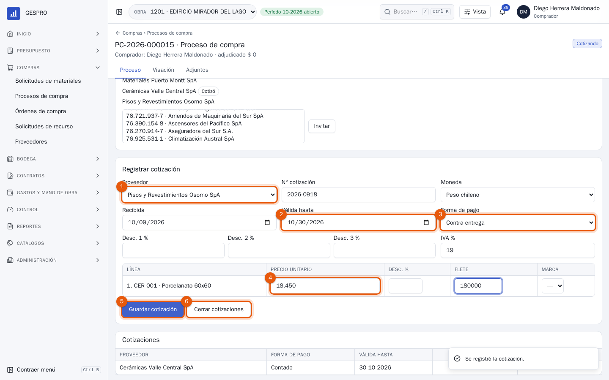
- El proveedor, entre los invitados.
- Válida hasta. Una oferta vencida aparece marcada en el cuadro.
- La forma de pago que ofrece.
- El precio unitario de cada línea. Si cobra flete, va en su columna; si da descuento por línea, en Desc. %. Una línea sin precio cuenta como no cotizada.
- Guardar cotización. El proveedor queda marcado como Cotizó.
- Cerrar cotizaciones cuando ya tengas las que esperabas. El proceso pasa al análisis.
Si el proveedor cotiza en dólares, UF o euros, elige la moneda: GESPRO lo convierte a pesos con el tipo de cambio del día de la cotización. Los descuentos 1, 2 y 3 son los globales de la cotización, aplicados uno sobre otro.
7El cuadro comparativo
Al cerrar las cotizaciones, GESPRO arma el cuadro: una fila por línea y una columna por proveedor, todo llevado a pesos y a la unidad base, con descuentos y flete. Así se comparan ofertas que venían en monedas o unidades distintas.
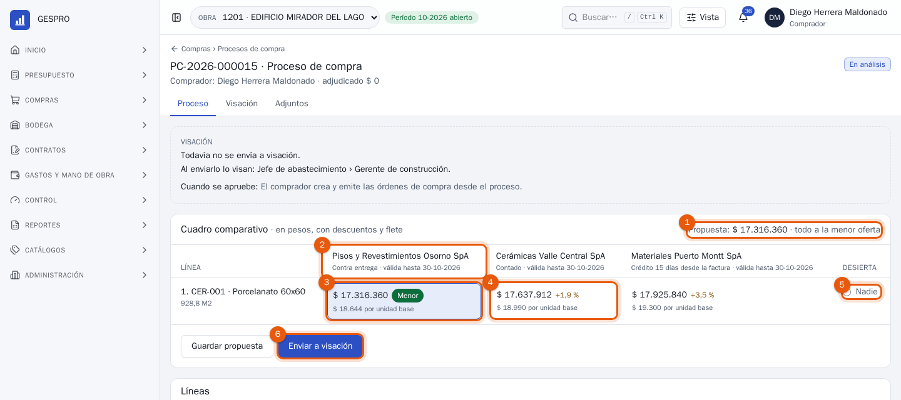
- La propuesta: cuánto suma lo que elegiste y cuánto más cuesta que comprar todo a la menor.
- Cada proveedor, con su forma de pago y hasta cuándo vale su oferta.
- La oferta elegida, destacada. GESPRO propone la menor de cada línea, marcada Menor. Debajo, el precio por unidad base y el plazo de entrega.
- Las demás ofertas, con cuánto superan a la menor. Pulsa una para elegirla.
- Nadie: la línea queda desierta y vuelve a quedar liberada para otro proceso.
- Enviar a visación. Guardar propuesta la deja guardada sin enviarla.
Si eliges una oferta que no es la menor, GESPRO pide el porqué. Sin justificación no se puede enviar.
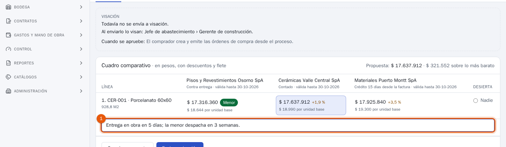
- La justificación, por ejemplo un mejor plazo de entrega o la calidad. Queda en el historial y la ve quien visa.
Una oferta que queda a menos de 0,5 % de la menor se marca Empate técnico. Se puede elegir sin justificar.
8Visar la adjudicación
Quien visa ve lo mismo que el comprador, sin poder cambiarlo. El cuadro va arriba, porque es lo primero que se mira para decidir.
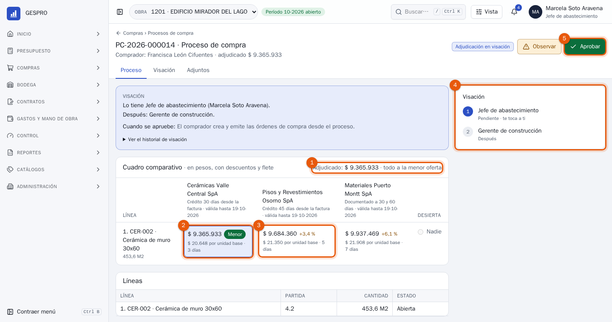
- Lo adjudicado y si todo fue a la menor oferta.
- La oferta elegida en cada línea.
- Las alternativas, con cuánto más costaban.
- La cadena: tu paso y quién firma después.
- Aprobar. Observar la devuelve al comprador con tu comentario, para que cambie la propuesta.
Cuando firma la última persona de la cadena, el proceso queda adjudicado y el comprador recibe un aviso.
9Crear y emitir la orden
Con el proceso adjudicado, el comprador crea las órdenes: una por cada proveedor que ganó alguna línea. Nacen ya aprobadas, porque la adjudicación ya se visó.
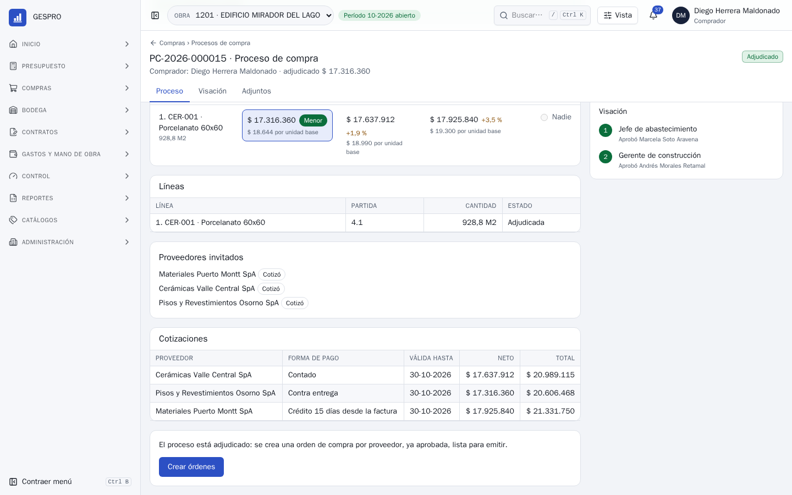
- Crear órdenes. GESPRO te lleva a la lista de órdenes.
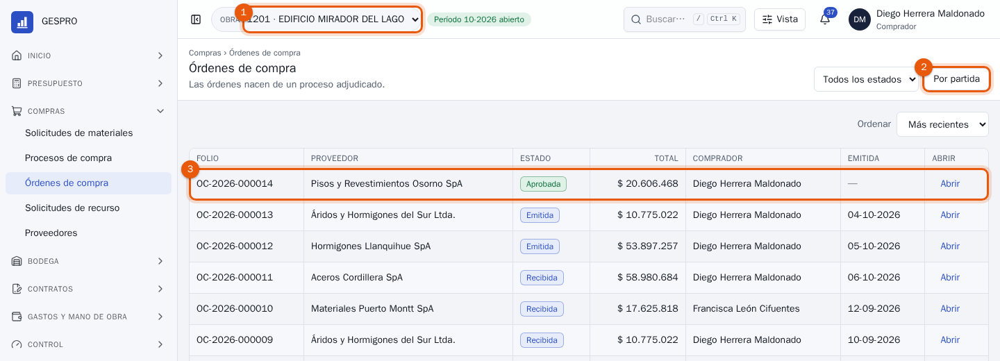
- El estado: filtra borradores, aprobadas, emitidas, recibidas o cerradas.
- Por partida: las órdenes agrupadas por partida del presupuesto.
- La orden nueva, aprobada y lista para emitir. Abrir la muestra.
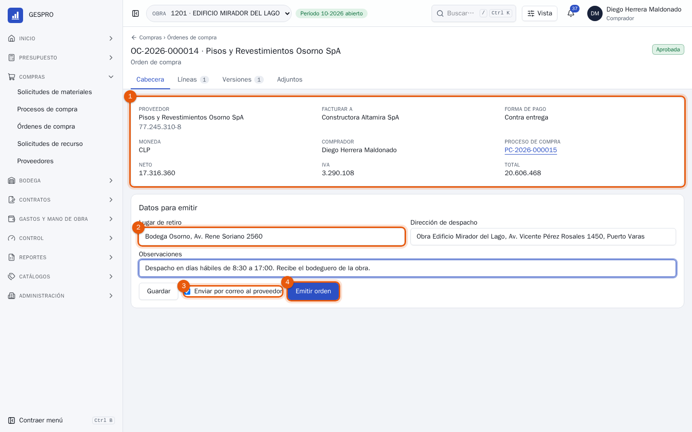
- Los datos de la orden: proveedor, a quién se factura, forma de pago, comprador, proceso y montos.
- Datos para emitir: lugar de retiro, dirección de despacho y observaciones. Salen en el PDF.
- Enviar por correo al proveedor, con el PDF adjunto.
- Emitir orden. Desde ese momento el monto queda comprometido en la partida.
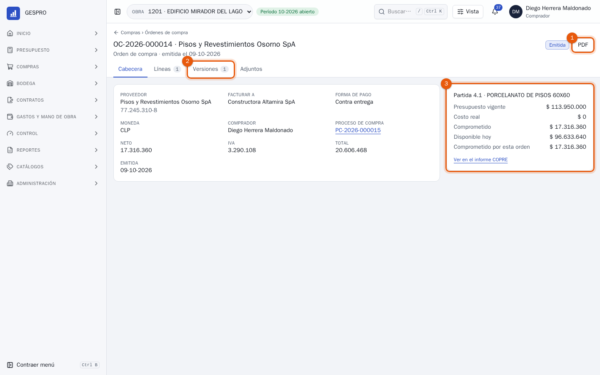
- PDF: la orden tal como la recibe el proveedor. Se abre en el visor, sin salir de GESPRO.
- Versiones: cada cambio de la orden queda como una versión con su propio PDF.
- La partida: presupuesto, costo real, comprometido y disponible. Desde la emisión, el monto de la orden cuenta como comprometido.
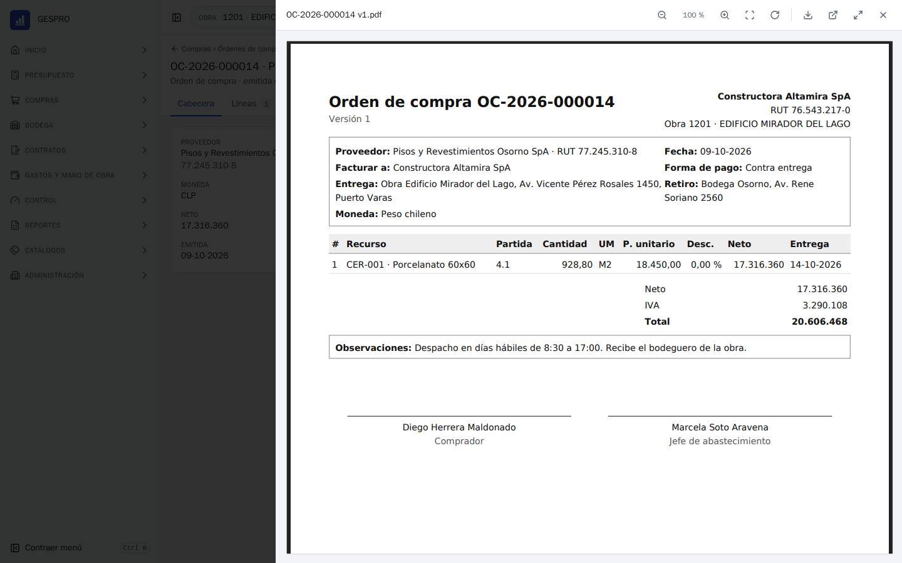
10Seguimiento y cambios
Una orden emitida espera la recepción en bodega. Su estado cambia solo: recibida en parte con la primera entrega y recibida cuando llega todo.
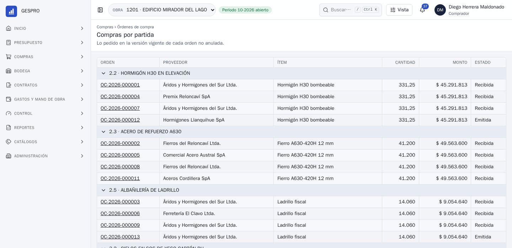
Cuando algo cambia
Cambió el precio o la cantidad
Desde la orden, Modificar la orden crea una versión nueva. Pasa otra vez por visación y, al aprobarse, reemplaza a la anterior.
El saldo no va a llegar
Si el proveedor entregó una parte y lo demás ya no se necesita, se cierra corta con motivo. Lo pendiente deja de estar comprometido.
La orden no va
Se anula con motivo. Si ya tenía recepciones, solo se libera lo que faltaba por recibir.
Proveedores
El maestro de proveedores está en Compras › Proveedores: RUT, razón social, rubros, contactos y formas de pago. Un proveedor bloqueado no se puede invitar.
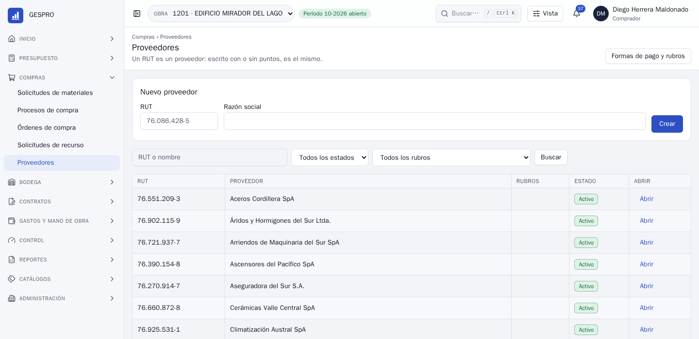
11Preguntas frecuentes
¿Puedo cotizar líneas de dos obras en un mismo proceso?
No. Un proceso es de una obra, porque la orden compromete el presupuesto de esa obra. Puedes invitar a los mismos proveedores en procesos de obras distintas.
Un proveedor no respondió. ¿Puedo cerrar igual?
Sí. Se compara con las cotizaciones que llegaron; el proveedor sin respuesta no aparece en el cuadro.
Nadie cotizó. ¿Qué hago con el proceso?
En Otras acciones, escribe el motivo y pulsa Declarar desierto. Las líneas vuelven a quedar liberadas para armar otro proceso.
Me equivoqué en una cotización.
Mientras el proceso esté cotizando, registra otra vez la cotización de ese proveedor: la nueva reemplaza a la anterior.
Un comprador sale de vacaciones. ¿Quién sigue sus procesos?
La jefatura de abastecimiento puede reasignar cada proceso desde Otras acciones, y las líneas aún no cotizadas desde Liberación › Liberadas.
¿Por qué la adjudicación tiene que firmarla también el gerente?
Porque supera el tramo de monto que la empresa definió para esa visación. Bajo el tramo, basta la firma de la jefatura de abastecimiento.